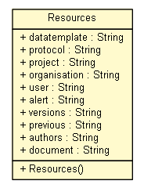

net.toxbank.client
Class Resources

java.lang.Object
 net.toxbank.client.Resources
net.toxbank.client.Resources
public class Resources
- extends Object
| Methods inherited from class java.lang.Object |
clone, equals, finalize, getClass, hashCode, notify, notifyAll, toString, wait, wait, wait |
datatemplate
public static final String datatemplate
- See Also:
- Constant Field Values
protocol
public static final String protocol
- See Also:
- Constant Field Values
project
public static final String project
- See Also:
- Constant Field Values
organisation
public static final String organisation
- See Also:
- Constant Field Values
user
public static final String user
- See Also:
- Constant Field Values
alert
public static final String alert
- See Also:
- Constant Field Values
versions
public static final String versions
- See Also:
- Constant Field Values
previous
public static final String previous
- See Also:
- Constant Field Values
authors
public static final String authors
- See Also:
- Constant Field Values
document
public static final String document
- See Also:
- Constant Field Values
Resources
public Resources()
Copyright © 2012 ToxBank project. All Rights Reserved.